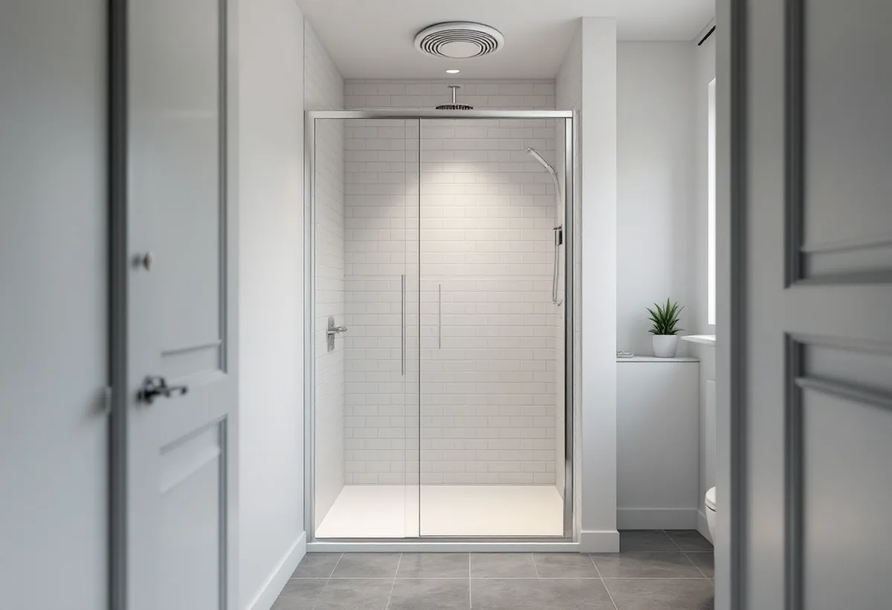
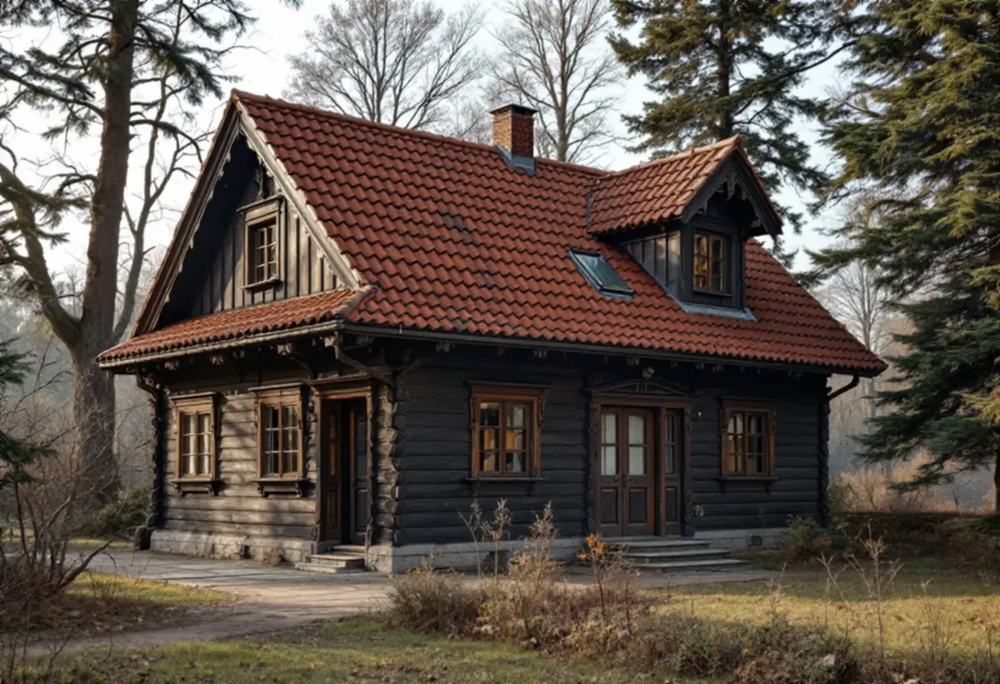

Platsbesök
Vi ser badrummet, frånluftsdonet och husets ventilationssystem.
Badrummet är det rum där husets ventilation syns tydligast, och i ett flerbostadshus i Sundbyberg ska den fungera för alla lägenheter när du är klar. Geal Entreprenad AB renoverar badrum i lägenheter och villor i Sundbyberg och tar hänsyn till ventilationen från början.
Sundbybergs stad förklarar att fastighetsägaren regelbundet ska kontrollera ventilationen genom en obligatorisk ventilationskontroll, OVK. Kontrollen ska göras innan ett nytt system tas i bruk, när ett befintligt system byggs om och regelbundet därefter: var sjätte år för flerbostadshus med F-, FX- eller S-ventilation och var tredje år för flerbostadshus med FT- eller FTX-ventilation.
Kravet gäller inte en- och tvåbostadshus. Kontrollen görs av en sakkunnig kontrollant, och brister ska åtgärdas senast inom sex månader. För dig som renoverar betyder det att badrummets frånluftsdon och flöde är en del av husets kontroll, och att donet inte ska bytas eller flyttas utan att föreningen vet om det.

Bostadsrättslagen kräver styrelsens tillstånd för installation eller ändring av anordning för ventilation, för installation eller ändring av ledningar för avlopp, värme, gas eller vatten och för ingrepp i bärande konstruktion. Styrelsen får bara vägra om åtgärden är till påtaglig skada eller olägenhet för föreningen, och den kan förena ett tillstånd med villkor.
För reparationer av ledningar och ventilationskanaler som föreningen har försett lägenheten med och som tjänar fler än en lägenhet svarar inte bostadsrättshavaren. Vi tar fram en beskrivning av vad som ändras i badrummet, så att styrelsen kan ta ställning innan arbetet börjar.
I villan krävs ingen OVK, men det som syns utvändigt kan kräva lov. Sundbybergs stad räknar antenner, ventilationshuvar och skorstenar, liksom ventilationsaggregat, som fasadändringar. I Duvbo och för kulturhistoriskt värdefulla byggnader är lovplikten utökad, och där krävs för det mesta bygglov för fasadändringar.
Ska badrummet i en Duvbovilla få en ny frånluftskanal som mynnar över taket planerar vi därför placeringen tidigt och tar fram underlag till en ansökan. Utanför Duvbo krävs inte längre bygglov för fasadändringar på en- eller tvåbostadshus som inte är kulturhistoriskt värdefulla.
Påverkar badrumsrenoveringen bärande delar eller brandskydd väsentligt kan en anmälan krävas, och då ska startbeskedet ha kommit innan arbetet börjar. Staden beskriver kontrollplanen som en förteckning över vad som ska kontrolleras, vem som kontrollerar, hur och när det görs, mot vad resultatet jämförs och hur det redovisas.
Kontrollerna kan göras av dig, av entreprenören, av en sakkunnig eller av en annan anlitad kontrollant. Vi fyller i våra kontroller löpande. Om köket kan du läsa under köksrenovering i Sundbyberg, och om tjänsten i stort under badrumsrenovering.
Bostadsrättslagen säger att bostadsrättshavaren svarar för reparationer på grund av vattenledningsskada bara om skadan har uppkommit genom vårdslöshet eller försummelse, till exempel av någon som för hans eller hennes räkning utför arbete i lägenheten. Den som anlitar en hantverkare tar alltså ett ansvar för hur arbetet görs.
Om bostadsrättshavaren försummar sitt ansvar så att någon annans egendom riskerar omfattande skador får föreningen enligt lagen avhjälpa bristen på bostadsrättshavarens bekostnad. Vi lägger därför tätskiktet enligt branschreglerna och dokumenterar det med foton innan kaklet sätts, så att det går att visa hur badrummet är byggt.

Vi ser badrummet, frånluftsdonet och husets ventilationssystem.
Beskrivning av ändringarna till styrelsen när det behövs.
Rivning, VVS, ventilation, tätskikt och ytskikt står var för sig.
VVS och el monteras och donet behåller sitt läge och flöde.
Tätskikt enligt branschreglerna, sedan kakel och klinker.
Vi går igenom badrummet och lämnar dokumentationen.
I en bostadsrätt ger Skatteverket rotavdrag för arbete på delar av ventilationskanal som finns innanför bostadens tak, väggar och golv, och för kakel- och klinkersättning, dusch, toalett och att byta golvbrunn, när du ansvarar för det enligt stadgarna.
Avdraget är högst 30 procent av arbetskostnaden och högst 50 000 kronor per person och år. Material och resor ger inget avdrag.
Rummets storlek, om något ska flyttas, ventilationen, vad som finns under golvet och vilka ytskikt och vilket porslin du väljer. Efter ett gratis platsbesök får du ett skriftligt kostnadsförslag.
Tätskikt, golvbrunn, el, VVS och intyg.
Badrumsrenovering i Stockholm →Takbyte, takbesiktning och plåtarbeten.
Takläggare i Sundbyberg →Rött lertegel och synliga taktassar i Duvbo.
Takrenovering i Sundbyberg →Duvbo, potten och medgivandena.
Attefallshus i Sundbyberg →Nytt hus, träd och regler i Duvbo.
Byggföretag i Sundbyberg →Puts och kulör i stadskärnan.
Fasadmålning i Sundbyberg →Panel och puts på Duvbos villor.
Fasadrenovering i Sundbyberg →Duvbo, flerbostadshusen och lovet.
Fönsterbyte i Sundbyberg →Egnahemsvillornas fönster i Duvbo.
Fönsterrenovering i Sundbyberg →Trägolv i äldre villor och nya golv.
Golvläggare i Sundbyberg →Ta bort färg och fernissa från gamla golv.
Golvslipning i Sundbyberg →Duvbos villor och stadens lägenhetskök.
Köksrenovering i Sundbyberg →Lamellhus, kulörbyte och bostadsrätt.
Målare i Sundbyberg →Duvbos tak, rännor och lov.
Plåtslagare i Sundbyberg →Altan, pergola och staket enligt stadens guide.
Snickare i Sundbyberg →Container, ställning och grannar.
Takbyte i Sundbyberg →Ny tapet i äldre lägenheter.
Tapetsering i Sundbyberg →Duvbo, träden och riktlinjerna.
Tillbyggnad i Sundbyberg →Duvbos villor, kaminer och etablering.
Totalrenovering i Sundbyberg →